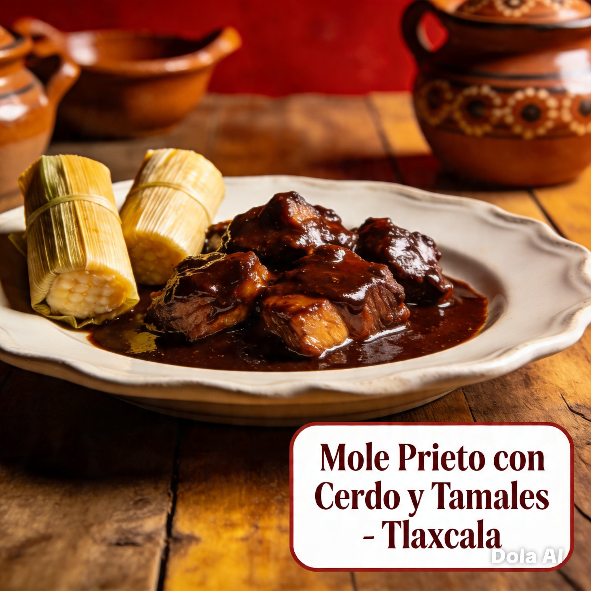
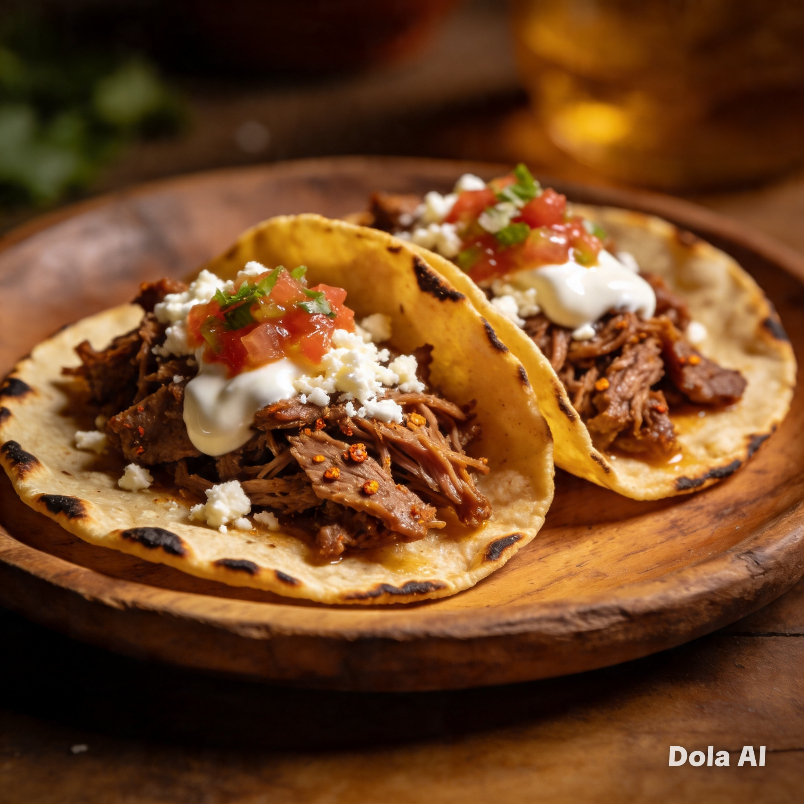

¿Qué es Tlaxcala?


Tlaxcala es uno de los 32 estados de México. Se ubica en el centro del país y es conocido por su historia y cultura.

El estado más pequeño de México con gran historia
Tlaxcala es un estado con una gran riqueza cultural, histórica y natural. A pesar de ser el más pequeño de México, tiene una identidad muy fuerte, llena de tradiciones, gastronomía única y lugares turísticos.


Tlaxcala es uno de los 32 estados de México. Se ubica en el centro del país y es conocido por su historia y cultura.


Fue un pueblo indígena importante que se alió con los españoles en la conquista.


Más pequeño de México.
Tradiciones fuertes.
Colonial.
Centro del país.


Hechos de maíz y rellenos.
Carne cocida en penca.
Bebida tradicional.
Muy comunes en fiestas.


Eventos importantes del estado.
Bailes tradicionales.
Trabajo hecho a mano.
Fiestas patronales.


Destacan Cacaxtla, Ocotlán y el centro histórico.
Tlaxcala es pequeño pero muy importante culturalmente.
Alumno: Denisse Reyes Estrada